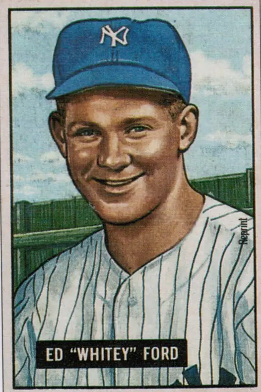

Whitey Ford "The Chairman of the Board"
Career Highlights & Facts
(Facts are AI-generated and may require verification)
- Holds the record for the most World Series victories by a pitcher.
- Set a record with 33 2/3 consecutive scoreless innings in the World Series.
- Earned a league-leading win total and a major pitching award in the same season.
Would you like to find out more about Whitey Ford?
Read Player Biography
Whitey Ford
May 12, 2015
/
in
BioProject - Person
Cy Young Award
,
Hall of Fame
1950s All-Stars
,
1960s All-Stars
/
by
admin
This article was written by
C. Paul Rogers III
No compilation of baseball’s all-time top left-handed pitchers is complete without Whitey Ford. Indeed, he is near or at the top of any worthwhile list. His 236 wins made him the winningest pitcher in the storied history of the New York Yankees. He incurred only 106 defeats, giving him a lifetime winning percentage of .690, the highest for major-league pitchers with more than 200 victories post-1900. His lifetime road winning percentage of .695 is also the highest in baseball history for pitcher with at least 100 road decisions.
Ford led or tied for the American League lead in victories three times – 1955, 1961, and 1963– and earned run average twice. His best year may have been the fabled 1961 season, when he went 25-4 and won the
Cy Young
Award. Two years later he fashioned a 24-7 record to again lead the Yankees to a pennant. He won (10) and lost (8) more World Series games than anyone in history. In doing so he set a record not likely to be broken with 33 2/3 consecutive scoreless World Series innings, eclipsing the mark of 29 2/3 held by
Babe Ruth
.
In Ford’s 16 major league seasons, he helped lead the Yankees to 11 pennants and six World Championships. It is no wonder that Yankee catcher
Elston Howard
dubbed him “the Chairman of the Board.”
1
At only 5’10,” Ford was known as a cerebral pitcher. About pitching he once said, “You need arm, heart and head. Arm and heart are assets. Head is a necessity.”
2
He knew, however, that one could overthink on the mound. He was known for his curveball and relied on it heavily, throwing it 50 to 75% of the time later in his career. Once he threw seven straight curveballs to pinch hitter
Dave Philley
on a 3-2 count before Philley doubled, driving in two runs. When asked what happened, Ford said, “One curve too many.”
3
Edward Charles “Whitey” Ford was born in New York City on October 21, 1928. He was the only child of Jim and Edna Ford, who lived on 66th Street in Manhattan. When Whitey was 5, the family moved to 34th Avenue in Astoria, Queens, an Irish, Polish, and Italian neighborhood. His father worked for Consolidated Edison and his mother as a bookkeeper for a local A&P grocery store. Later, after Whitey was pitching professionally, his father and a friend purchased and ran the Ivy Room, a bar in Astoria.
4
Ford’s father played semipro baseball for the Con Ed team, but there were athletic genes from his mother’s side as well as two of her brothers played semipro baseball in Astoria. As a child, Ford played baseball and stickball in the summer, football in the fall, and roller hockey in the winter. During the summers, Ford and his friends played sandlot baseball until dark on fields next to the Madison Square Garden Bowl, about a mile from his neighborhood. Closer to home, Ford and buddies played stickball against a wall using a rubber spaldeen and a broomstick.
Ford grew up a Yankee fan and idolized
Joe DiMaggio,
who would later become his teammate. As a kid, he checked the box score the first thing every day to see how many hits DiMaggio had gotten. Ford’s uncles sometimes took him on the long subway ride to
Yankee Stadium
where he could watch his idol in person.
Ford played on his first organized baseball team when he was 13 after several of the neighborhood fathers got together and bought uniforms for their sons. They called themselves the Thirty-fourth Avenue Boys and stayed together for five years.
When Ford graduated from eighth grade in 1942 he faced a dilemma. He very much wanted to play high school baseball but the local school, Bryant High, didn’t have a baseball team. As a result, Ford attended the Manhattan School of Aviation Trades with his best friend and his catcher Johnny Martin. It was an hour bus ride from his home in Queens, and Ford had no interest in becoming an aviation mechanic, but it did have a baseball team. Although only 5’9” and about 150 pounds, Ford mostly played first base during high school, hitting about .350.
5
He began pitching for his high school team during his junior year, winning six straight games before losing the city vocational school championship game to a school from the Bronx.
6
The team had to practice on a public playground under the Queensborough Bridge on an ill-shaped field. At one point, Ford’s high school coach, Mike Chafetz, stopped his good left-handed batters from taking batting practice because they lost so many balls by hitting them on the roof of an adjoining garage or against the bridge. The team had a limited supply of baseballs and no budget to get more. Ford told the coach that he would retrieve all the balls he hit out of the field if he could take batting practice. So after taking his swings, Ford would disappear for half an hour chasing down the balls he hit and lost.
7
When Ford was 17, Joe Foran, an Irishman who had come to the U.S. to play soccer and work as a carpenter, moved his family into an apartment building across the street from the Fords. The Forans had three daughters, including Joan, who was the middle child. Joan was three years younger than Ford, who didn’t pay her much attention at first. But within five years they would marry. The couple would eventually have three children, each born a little more than a year apart. Sally Ann was the oldest, born in 1952, Eddie, Jr., was next, born in 1953, and Tommy was the youngest, born in 1954.
In April 1946, Ford’s senior year in high school, he attended a Yankees tryout camp at Yankee Stadium as a first baseman.
Paul Krichell
, a Yankees scout, noticed Ford’s strong arm during fielding practice. He told Ford he thought he was too small to play first base, but had him throw a few pitches on the sideline and showed him how to throw a curveball. Ford continued to do some pitching his senior year, but the number one pitcher on his high school team was
Vito Valentinetti
, who later pitched for the Chicago Cubs, Washington Senators, and three other teams during a four-year big-league career in the late 1950s.
The summer following his senior year Ford resumed playing for the Thirty-fourth Avenue Boys where he alternated every game between pitching and playing first base. The team went 36-0 to win the Queens-Nassau semipro league, with Ford winning 18 games without a loss when pitching. In September, Ford pitched the
New York Journal-American
championship game in the
Polo Grounds
against a team from the Bronx, winning 1-0 in 10 innings. He not only pitched a two-hitter, but doubled to open the top of the 10th to break up the opposition’s no-hitter and eventually score the winning run. He then struck out the side in the bottom of the tenth, giving him 18 strikeouts for the game. His performance earned him the
Lou Gehrig
Trophy as the game’s Most Valuable Player. Twenty-four years later Ford’s son Eddie would win the same trophy.
8
Although Ford was hopeful of attracting a big bonus to sign as a professional, his size seemed to work against him. The Boston Red Sox first offered him $1,000 to sign after his championship game performance. The New York Giants then offered him $2,000, prompting the Red Sox to up their offer to $3,000. Ford most wanted to sign with the Yankees, and Paul Krichell soon called with an offer of $5,500. Ford verbally agreed and Krichell and another Yankee scout, Henry Hesse, traveled to Astoria to get Ford’s signature on a contract and take him to an exhibition doubleheader in Queens involving some Yankee farmhands. They wanted Ford to sign right away, but Whitey said he preferred to sign when they brought him back after the games.
While they were gone the Giants called, spoke to Ford’s mother, and offered $6,500. Even though Ford would have signed with the Yankees for almost no bonus, it forced Krichell to up the Yankee offer to $7,000 on the spot.
9
The Yankees assigned Ford to report to spring training in 1947 with the Binghamton Triplets of the Eastern League, who trained in Edenton, North Carolina. The Triplets were managed by former Yankees southpaw great
Lefty Gomez
who had trouble remembering all of his new players’ names. He started calling Ford “Blondie” and “Whitey” and pretty soon stuck with “Whitey.” Although that was the origin of the “Whitey” nickname, it didn’t really stick until after Ford’s rookie year with the Yankees in 1950 when former minor-league teammates
Bob Porterfield
and
Tommy Gorman
joined the Yankees.
10
Gomez imposed a 10:00 pm curfew. A carnival was in town and one night about 9:40 Ford and teammate Ray Passapanka decided to catch one last ride on the Ferris wheel before getting back to their hotel. They ran into a problem when the Ferris wheel operator would not stop the wheel to let them off and ended up getting back to the hotel a few minutes after 10. They were met in the lobby by Gomez, who promptly fined them each five dollars.
A number of years later when Ford was with the Yankees, he happened to see Gomez interviewed by Joe DiMaggio on television between games of a doubleheader. Gomez related how, in spring training in Edenton he had given the Ferris wheel operator a couple of dollars to keep the wheel going past 10:00 pm before walking back to the hotel to await the tardy ballplayers.
After the interview, Gomez came into the Yankee clubhouse only to be confronted by Ford, who said, “You SOB. How can you keep that from me all these years?”
Gomez laughed and said, “I got a lot of mileage out of that story at banquets.”
Ford said, “Well, at least you can give me back the ten dollars you fined me.”
Gomez reached in his pocket and gave him the money and Ford had his revenge. Gomez had only fined him five dollars.
11
After that first spring training, the Yankees assigned Ford to the Butler, Pennsylvania, Yankees in the Class-C Middle Atlantic League. In 24 games there, he won 13 and lost 4 with what he described as a mediocre fastball and a curve. He was 5’9” and 150 pounds and with a 3.84 earned run average, the major leagues seemed a long way away.
Ford’s 1947 performance earned him a promotion to the Norfolk Tars in the Class-B Piedmont League, albeit at a pay reduction of from $250 to $200 a month. There, pitching for a team that finished fifth in a six-team league, Ford went 16-8, lowered his earned run average to 2.58 in 216 innings and led the league with 16 complete games. He was now up to 5’10” and 170 pounds and had a little more oomph on his fastball. As a result, he led the league with 171 strikeouts.
Clint Courtney
, who would become American League Rookie of the Year with the St. Louis Browns in 1952, was one of Ford’s teammates in Norfolk and invited Whitey to play winter ball in Mexico with him. Ford was strapped for cash and so agreed, over the objections of the Yankees. He faced some top competition while there and learned to throw a change-up but contracted amoebic dysentery and become so sick that he almost died. Although he tried to fly home several times, when he was spotted at the local airport the Mexican team owner would race over to stop him from getting on a plane. When Ford finally returned home after the league playoffs, he was down to 130 pounds and still very weak.
12
When Ford reported to the Yankees’ 1949 minor-league spring training in Orangeburg, South Carolina three weeks later, he was far from recovered. After being there about 10 days, he passed out in the third inning while pitching a game in Augusta, Georgia. The Yankees shipped him to New York and had him admitted to Lenox Hill Hospital to get rid of the dysentery. He was in the hospital 19 days and didn’t report to his minor-league assignment in Binghamton, New York until the season was six weeks old.
Even with the missed time, Ford had an outstanding season for the Class-A Triplets, finishing with a 16-5 record and leading the Eastern League in earned run average (1.61) and strikeouts (151 in 168 innings).
13
He led them from last place in mid-season to fourth by season’s end where they finished with a 70-70 record. The Triplets just eked into the playoffs but then swept the second place Scranton Red Sox in four games and defeated the Wilkes-Barre Indians in seven games to win the league championship.
For the first time, Ford started to believe he had a chance to pitch for the Yankees and began displaying the cockiness he became known for. With Binghamton, he would often sit on the bench next to manager
George Selkirk
and when their pitcher got in trouble, he would tell Selkirk to put him in, telling him he could get the opposition out. Finally Selkirk got tired of listening to Ford and told him, “Who’s managing this club, you or me? Go sit at the end of the bench. If I want you, I’ll call you.”
14
Jack Burns
was the Scranton manager and remembered that Ford was a big winner that year in the Eastern League because he “had guts, poise, and honestly felt no one in the world could beat him.” Burns recalled one night when his club was playing Binghamton and had the bases loaded with nobody out when Ford was called in from the bullpen. Ford strutted in exuding confidence, inciting Burns and the Scranton bench to really get on him. But Ford struck out the first two batters and got the third on a popup to the infield. After the ball was caught for the third out, Ford turned to Burns who was coaching third and very politely said, “Was that all right, Mr. Burns?”
15
Casey Stengel
often related that Ford anonymously called him after the Triplets won the Eastern League title to tell him that if he wanted to win the pennant, he “should bring Ford up from Binghamton.” Ford denied doing so but admitted that he did call Paul Krichell to ask that the Yankees bring him up so that he could get a taste of life in the big leagues.
16
Krichell apparently talked it over with general manager
George Weiss
before telling him no, but that if he behaved himself in the offseason (i.e., did not go pitch in Mexico), he would be brought to spring training with the Yankees.
17
When Ford reported to the Yankees’ 1950 spring training in St. Petersburg, Florida, he was trying to make a veteran team that had won the World Series two of the last three years. He was such a cocky, chesty guy that the veterans soon began referring to him as “The Fresh Young Busher.” Pitching coach
Jim Turner
asked veteran lefty
Eddie Lopat
to take Ford under his wing and work with him. When Lopat tried to give Ford a tip or show something, his response was often, “I did it this way in Binghamton and it worked for me there.” Pretty soon Lopat told Turner, “Take him back. He’s too much for me.”
18
After a couple of weeks, Ford finally made his spring training debut against the Phillies in Clearwater, pitching well in a three-inning stint. He developed a sore elbow, however, was knocked around in his next outing against the Detroit Tigers in Lakeland, and was soon sent down to the Kansas City Blues camp.
The Blues played in the American Association and finished dead last that year with a 54-99 record. But Ford pitched well out of the gate, and by the end of June was 6-3 with a 3.22 earned run average and eight complete games in 12 starts. That performance earned him a promotion to the Yankees, who at the time were four games out of first place in a four-team race and in need of pitching. At 21 years of age, Ford was a big leaguer.
Ford traveled all day and night from Kansas City to Boston, where the Yankees were playing, arriving at 7:00 AM on July 1. By the second inning of that afternoon’s game, Ford had made his big-league debut.
Tommy Byrne
was knocked out of the box in that frame and with one out, Casey Stengel waived Ford in from the bullpen. It was a very rocky beginning. In 4 2/3 innings, Ford surrendered five runs on seven hits and six walks. He learned afterward, however, that Red Sox first-base coach
Earle Combs
had picked up his pitches and relayed them to the Boston hitters. Eddie Lopat and pitching coach Jim Turner helped him correct the problem the next day.
19
Ford made his first major-league start five days later on July 6 against the Philadelphia Athletics in Yankee Stadium in front of about 65 friends and relatives. He pitched well for six innings, limiting the Athletics to three hits and a single run. But the A’s touched him for three runs in the seventh and when
Bobby Brown
pinch-hit for him in the bottom of the inning, he trailed 4-3. The Yankees came back to win 5-4, however, on
Yogi Berra’s
ninth-inning double off
Lou Brissie
, making Ford’s first start a no-decision.
Ford sat for 11 days before his next start on July 17 against the Chicago White Sox in Yankee Stadium. He pitched into the eighth inning and managed to notch his first big-league win, but only barely. He left the bases loaded and two outs in a 4-3 game to
Tom Ferrick
, who struck out
Marv Rickert
to end the inning and then pitched a 1-2-3 ninth to preserve the victory.
Nine days later Ford recorded his second win in his third start, allowing two runs in 5 2/3 innings against the Browns in St. Louis in a 6-3 victory that drew the Yankees to within a half-game of the lead. Ford started again on July 30 against the White Sox, but got knocked out in the first inning of a game the Yankees came back to win 4-3. After his first four major-league appearances, Ford’s earned run average was an unsightly 6.04 but his won-loss record was 2-0.
Stengel sent Ford to the bullpen after the Chicago debacle, where in three appearances he pitched 8 1/3 scoreless innings, allowing only five hits. Those performances earned him a start on August 15 against the Senators in Washington and he didn’t disappoint, throwing his first big league shutout, a three-hitter, in a 9-0 win. Although Ford continued to pitch exceptionally well, Stengel was cautious in a tight pennant race, starting Whitey against second division teams while preferring to use his big three of
Allie Reynolds
,
Vic Raschi
, and Eddie Lopat against the contenders. That changed when Ford started on August 30 in the first game of a doubleheader against the Cleveland Indians, where he got a no-decision in a 4-3 Yankee win. Lopat then won the second game 3-0, pushing the Yankees into first place for the first time since early June.
Stengel surprised everyone when he sent Ford to the mound on September 16 in Detroit in the crucial third game of a series against the Tigers. The teams had split the first two games, leaving the Tigers with a slim half-game lead over New York. Ford was by now 6-0 with a sub-3.00 earned run average, but he was still a rookie with only two and half months of big-league experience. Before 56,000 hostile fans, Ford was on his game, as was Detroit’s veteran right-hander
Dizzy Trout
, and through five innings the game was scoreless. DiMaggio hit a home run in the sixth for a 1-0 lead, but Ford surrendered a run in the eighth on two doubles. Stengel surprisingly let Ford bat in the top of the ninth, and he worked a walk in a seven-run inning that put the game out of reach, 8-1. Ford pitched a 1-2-3 ninth and the Yankees forged back into first place, where they would stay.
When asked after the game if that was the biggest game he’d won, he answered with a straight face, “Well, no. I remember pitching the Maspeth Ramblers to a 17-11 victory over the Astoria Indians. That was a good one, too.”
20
Ford finished his rookie season with nine wins, only one loss, and a sparkling 2.81 earned run average, all the more impressive given his rocky start. He gave up only 87 hits in 112 innings pitched and completed seven games in 12 starts, including two shutouts. He finished second in the American League Rookie of the Year balloting to
Walt Dropo
of the Red Sox, who had a monster inaugural year batting .322 with 34 home runs and 144 runs batted in.
According to Dropo, Ford was like a master chess player who used his brain to take the bat out of a hitter’s hands. He never started a hitter off with the same pitch and threw four pitches at different speeds with varying arm angles to every part of the plate. To Dropo it was like Ford had 104 pitches.
21
The Yankees’ opponent in the 1950 World Series was the Philadelphia Phillies “Whiz Kids,” who had staggered to the pennant on the last day of the season with a dramatic 10-inning win over the Brooklyn Dodgers on a home run by
Dick Sisler
, thereby avoiding blowing a 7 ½ game lead with about 10 days left in the season. The first three games of the Series were all pitching duels and all one-run Yankee victories. With a three-games-to-zero lead, Stengel started Ford in Game Four to try to close out the Series.
He again rose to the occasion, and headed into the ninth inning with a five-hit shutout and a 5-0 lead. The Phillies rallied, however, thanks in large measure to a fly ball by
Andy Seminick
that left fielder
Gene Woodling
lost in the sun. With two outs and the tying run at the plate, Stengel brought in Allie Reynolds to face pinch-hitter
Stan Lopata
to a cascade of boos from fans who wanted Ford to finish the game. Reynolds got Lopata to chase a high fastball for the third out, sealing a 5-2 win and a World Series sweep. The next day in the
New York Times
Arthur Daley wrote that Ford was in complete control and had “the brass of a burglar.”
22
A couple of weeks after the season Ford stopped by his draft board in Queens to see when he might expect a call-up, since he was draft-eligible. He was surprised to be told to report in two weeks, on November 19. After basic training, he was stationed at Fort Monmouth, New Jersey, where he was first assigned to the Signal Corps. But he twice fell off of telephone poles, acquiring splinters and skin burns in the process, prompting his becoming a radar operator.
23
Ford’s other main duty was to pitch for the base baseball team. The base commander, however, expected Ford to pitch three times a week, saying it was good for morale. Ford was worried about what such a pitching load would do to his arm and quit the team when the commander would not relent, half-expecting to get court-martialed.
For the balance of his two years in the army, Ford played for the Monmouth Beach Tavern softball team to keep in shape. While he was in the service, a promoter friend put together Whitey Ford All-Star basketball and baseball teams, depending on the season. The teams would play exhibition games in upstate New York towns like Peekskill, Poughkeepsie, and Binghamton when Ford was able to get a three-day pass.
24
When Ford had been in the army five months he obtained a 13-day furlough so that he could marry Joan Foran, his girlfriend from Astoria. They were married on April 14, 1951, in St. Patrick’s Church in Long Island City and in attendance, much to Ford’s surprise, was the entire Yankee team. Casey Stengel had loaded the team on a bus after an exhibition game against the Dodgers that afternoon and so Joe DiMaggio,
Joe Page
,
Tommy Henrich
, and others all attended the reception.
Mickey Mantle
was along, too, although he was too shy at that juncture to get off the bus. At one point Ford boarded the bus to thank everyone for coming and for the first time met Mantle, who would later become his great, lifelong friend.
25
After the wedding the Fords delayed their Florida honeymoon for three days so that Whitey could throw out the first pitch at the Yankees’ 1951 Opening Day in Yankee Stadium.
26
After missing all of the 1951 and 1952 seasons, Ford mustered out of the Army in November 1952 and joined the Yankees in St. Petersburg for spring training in 1953. The team was coming off of their fourth straight World Series victory and had formidable starting pitching in Allie Reynolds, Vic Raschi, Eddie Lopat, and
Johnny Sain
. Stengel worked Ford in slowly, using him in relief just once in the first 10 games as the Yankees raced to an 8-2 record out of the gate. After a no-decision in his first start, Ford reeled off seven victories in a row to make him 16-0 as a starter to begin his major-league career.
27
He was 9-2 by the midpoint of the season and finished 18-6 as the Yankees swept to the pennant by 8 ½ games over the Cleveland Indians. Ford threw 11 complete games and three shutouts with an earned run average of 3.00. In 207 innings he struck out 110 which was exactly as many as he walked, signifying that early in his career he was not the control pitcher he would become.
Ford also batted .267 and drove in 10 runs for the year, both career highs. On August 12 in Washington, he had the best day at the plate in his career, going 4-for-5 with two runs batted in in a 22-1 Yankee victory. That performance intensified Ford’s efforts to have Stengel use him as a pinch hitter.
28
Stengel held Ford out of the 1953 World Series against the Brooklyn Dodgers until Game Four. With the Yankees up two games to one, Ford started in
Ebbets Field
against
Billy Loes
, who had also grown up in Queens. Ford was victimized by some poor fielding and timely hitting in the first inning to fall behind, 3-0, in a game the Dodgers won 7-3. He completed that inning but Stengel brought in Tom Gorman to start the second. Ford came back in Game Six in Yankee Stadium against
Carl Erskine
, who was pitching on two days’ rest. The Yankees were ahead three games to two and jumped off to a 3-0 start in the first two innings. The score should have been 4-0 but Ford cost the Yankees a run in their second, tagging up and leaving third base too soon on a sacrifice fly by Yogi Berra to deep right-center field.
The gaffe cost Ford a victory as the Dodgers came back to tie the game 3-3 on a ninth-inning home run by
Carl Furillo
off Allie Reynolds, who had relieved Whitey after seven innings with the score 3-1. The Yankees, however, won the game and the Series in the bottom half when
Billy Martin’s
single to center drove in
Hank Bauer
with the winning run.
About this time Ford picked up another nickname, which would stay with him in a less formal way than “Whitey.” When he returned from the service he started hanging around with Mantle and Billy Martin, a street-smart kid from Oakland. Casey Stengel started calling the three “city slick” because of their various hijinks and in Ford’s case it stuck. In fact, Ford’s autobiography is titled
Slick: My Life In and Around Baseball
.
29
The 1954 Yankees were loaded and fully expected to reign in their sixth straight pennant and World Series. In fact, they won 103 games, more than any of the previous five seasons. The Cleveland Indians, however, won 111 to win the pennant by eight games and stop the Yankees’ championship streak at five. But Ford, by his own admission, reported to camp overweight and out-of-shape. He got off to a slow start and Stengel, clearly unhappy with him, left an obviously tiring Ford in to absorb a six-run sixth inning against the Red Sox on May 21. It turned out that he was also tipping his pitches and had his mechanics out of whack.
30
After a 1-0 loss to the Washington Senators on an unearned run on Memorial Day, his record fell to 2-4. By the midpoint of the season he was still only 6-6 as the Yankees trailed the Indians by 4 ½ games. Still he was selected for his first All-Star Game and picked by Casey Stengel to start. He responded with three shutout innings, allowing only a single by
Stan Musial
and a walk to
Roy Campanella
, in a game that turned into a slugfest won by the American League 11-9.
Ford pitched like an All-Star for the rest of the year. On July 16 he defeated the Baltimore Orioles 3-2 with a complete-game seven-hitter as the Yankees won their 11th game in a row and closed to one-half game back of the Indians. Although the Yankees could not keep pace with the streaking Indians over the last months of the season, Ford’s second half 10-2 mark gave him a 16-8 record for the year. His 2.82 earned run average was among the best in the league and he allowed only 170 hits in 210 2/3 innings. Although healthy all year, he made only 28 starts as Stengel continued to pitch him only every fifth, sixth, or even seventh day. That practice cost Ford five to eight starts a year and made it difficult for him to win 20 games.
He came closer in 1955, winning 18 games against seven losses in 33 starts as the Yankees regained their American League supremacy. At the All-Star break Ford stood 10-4 with a 2.69 earned run average to help the Yankees to a five-game lead over the Indians. He pitched in his second All-Star Game, relieving
Early Wynn
in the seventh inning with the American League sporting a 5-0 lead that Mickey Mantle had sparked with a gargantuan first-inning three-run home run off
Robin Roberts
. Uncharacteristically, Ford couldn’t hold the lead, surrendering five runs, four earned, over the next inning and two-thirds as the National League nibbled at him for five singles and a walk, while benefitting from two errors. The Senior Circuit eventually won the game, 6-5, on a dramatic 12th-inning home run by Stan Musial off
Frank Sullivan
.
Although the Yankees sputtered some in the second half of the season, in early August dropping to third place, only a half game out of fourth, they finished strong to win the pennant by three games over the Indians. On September 2 Ford took a no-hitter into the seventh inning against the Washington Senators before allowing a line single to left by
Carlos Paula
. Although the Senators scored two unearned runs to make the final score 4-2, Ford finished with a complete game one-hitter, matching a similar effort in 1953. Five days later he did it again against the Philadelphia Athletics, allowing only a seventh-inning bloop double down the right-field line to
Jim Finigan
in a 2-1 victory.
Ford’s consecutive one-hitters were only the fifth time in major-league history that a pitcher had accomplished the feat and helped cap his finest season thus far. His 18 victories tied
Bob Lemon
and Frank Sullivan for the most wins in the league. He led the league with 18 complete games and his 2.63 earned run average, 253 2/3 innings pitched, and .720 winning percentage were all second.
The Brooklyn Dodgers finally broke through to win the World Series in 1955 in seven games, but no thanks to Ford who won Games One and Six for the Yankees. In Game One, Ford was the victim of
Jackie Robinson’s
famous steal of home in the eighth inning. With the Dodgers down by two runs and two outs, Robinson took off for home as Ford went into his windup. Umpire
Bill Summers
called Robinson safe even though Yogi Berra appeared to apply the tag in front of the plate. Berra immediately became apoplectic, jumping up and down in a fury. In Ford’s autobiography he wrote, “I’ve seen the films of that play maybe fifty times, and Robinson is out every time.”
31
In spite of the blown call and Yankee errors that led to two unearned runs, Ford hung on to win, 6-5, pitching eight innings before giving way to
Bob Grim
for the ninth. After five games, however, the Dodgers were ahead three games to two and on the brink of winning their first World Series. The evening before Game Six, Ford appeared on the
Ed Sullivan Show
along with Mickey Mantle and Tommy Byrne. When Sullivan asked Ford who was pitching for the Yankees tomorrow, Ford said, “I am and Tommy’s pitching the Seventh Game.”
32
His confidence was not overstated because the following afternoon Ford pitched a four-hitter to defeat the Dodgers 5-1 and tie the Series at three games apiece. The Yankees scored all five runs in the first inning off
Karl Spooner
and Ford fairly cruised to victory, retiring the Dodgers in order in the last two innings and getting 15 ground-ball outs while striking out eight. After the game Hall of Famer
Ty Cobb
visited the Yankees’ dressing room and congratulated Ford, saying, “I’d hate to have been hitting against you myself.”
33
Of course, the euphoria was short-lived, as the Dodgers came back to defeat the Yankees in Game Seven, 2-0, behind another young southpaw,
Johnny Podres
, to win their first World Series.
Two days after the World Series, the Yankees took off for a barnstorming trip to Hawaii, Japan, and Okinawa. The Yankees, fresh off their defeat by the Dodgers, played to win every game. In a game in Japan, Ford was pitching with a runner on second base. He whirled and fired a pick-off throw at second, but neither second-baseman
Jerry Coleman
nor shortstop
Gil McDougald
knew it was coming. With no one covering the bag, the throw struck the Japanese umpire square in the head. The umpire was down for several minutes but was not seriously injured and was able to continue with the game.
One evening during the trip Ford was with many of his teammates in a hotel bar in Nagoya drinking with some US Air Force officers and the officers’ wives from the nearby American base. After a while only Ford, Billy Martin, and
Eddie Robinson
were left from the Yankees and the officers and their wives soon returned to the base as well. Ford, Martin, and Robinson decided it would be fun to pretend they were outnumbered in a bar fight and try to get their teammates up from bed to help them.
34
So Ford first called Yogi Berra’s room while Robinson and Martin made a racket in the background. Berra came rushing down with no shoes and just in his undershirt and pants to help his teammates. When he realized he’d been duped, he started calling other teammates and pretty soon they had most of the Yankee team back in the bar.
35
On the way home from Japan the Yankees stopped in Guam to play a game to raise money for seriously ill and crippled children there. The Yankees offered rides to Hawaii, their next stop, to two of the children who needed medical treatment there. They were both just seven years old and unaccompanied. Ford took complete charge of them on the flight, feeding them, playing games with them, scrounging souvenirs, and even watching over them while they slept.
36
Ford was 27 years old to begin the 1956 season and started off like a house afire, allowing only five runs in his first six starts to go 6-0 with a miniscule 0.83 earned run average. In June he strained his back and missed a week but by the All-Star break he was still 10-4 with a 2.43 earned run average. He again made the All-Star team and pitched the fourth inning for the American League, surrendering a two-run homer to
Willie Mays
in an eventual 7-3 National League win.
After Ford won his first four starts after the break to run his record to 14-4 he seemed primed for his first 20-win season. He ran into injury problems, however, suffering a bruised left hand on a line drive back to the box by Ray Boone that cost him a week and later missing 10 days with a stiff shoulder. As a result, he went a full month without a win before defeating the Senators in Washington, 6-4, on August 31 for his 15th victory, despite giving up three home runs to
Jim Lemon
. In the eighth inning Lemon came up with a man on base, and Casey Stengel sent in Tom Morgan in relief despite Whitey’s protestations to stay in the game. Stengel reportedly said, “Are you out of your damn mind? The guy already hit three home runs. You want him to try for four?”
37
Morgan struck Lemon out and finished the game to secure the win.
By September 26 Ford was in a position to try for his 20th win against the sixth-place Baltimore Orioles, but 21-year-old
Charlie Beamon
pitched the game of his life in his major-league debut and beat Whitey 1-0 on a four-hitter.
38
Ford’s turn came up again on the last day of the regular season and Stengel gave him the option of going for his 20th win for a second time. But the Yankees had clinched the pennant back on September 20, and Ford turned down the chance so that he would be ready to pitch the opening game of the World Series. Although he didn’t win 20, 1956 was his best season yet. He finished 19-6 with 18 complete games in only 30 starts. His .760 winning percentage and 2.47 earned run average both led the American League. His career won-loss record now stood at 80-28 with a gaudy .741 winning percentage.
Ford was by all accounts the Yankees ace and so did start Game One of the World Series, which was against the Brooklyn Dodgers for one last time. The game was in Ebbets Field which was far from his favorite ballpark. Its short dimensions coupled with the Dodgers predominantly right-handed lineup was a bad combination and Ford lost 6-3, largely due to a three-run home run by
Gil Hodges
in the third inning. With the Yankees down two games to none and since he had thrown only three innings in the opener, Stengel trotted Ford to start Game Three in Yankee Stadium on only two days’ rest. This time he threw a complete game to prevail 5-3 in a see-saw contest, thanks in large measure to a three-run homer by
Enos Slaughter
in the sixth that put the Yankees ahead for good.
Of course, the 1956 Series is mostly remembered for
Don Larsen’s
perfect game in Game Five. Ford, however, missed the last four innings of the masterpiece because he was warming up in the Yankee bullpen in case Larsen should falter. Ford wasn’t used again as the Yankees won the Series in seven games, with
Johnny Kucks
shutting out Brooklyn 6-0 in the finale. But Ford’s win in Game Three had proved to be pivotal in digging the Yankees out of a two-game hole. He now had three World Series rings to show for his five major-league seasons.
Although the Yankees would win another pennant in 1957, the season was a trying one for Ford. He struggled with shoulder problems much of the early season and was on the disabled list for six weeks for part of May and all of June. That season was also the year of the infamous Copacabana incident, where a group of Yankees including Ford went with their wives to celebrate Billy Martin’s 29th birthday and hear Sammy Davis, Jr. perform.
39
They became involved in a verbal confrontation with members of a bowling team who were directing racist remarks at Davis. Pretty quickly one member of the bowling team was lying prone on the floor in a back room with a broken jaw, put there either by Hank Bauer or a bouncer.
40
The Yankees fined all of the involved players $1,000 a piece, except for the low-salaried
Johnny Kucks
who was fined $500, and traded Billy Martin to the Kansas City Athletics a month later, breaking up the Mantle-Martin-Ford triumvirate.
41
Ford, of course, had a well-earned reputation for enjoying the night life, particularly with his buddy Mickey Mantle. But he reportedly never ventured out on the evening before a start, and generally enjoyed doing so as a way to unwind after pitching.
42
Robin Roberts, who was with the Yankees briefly in 1962, recalled the time that Ford invited
Jack Reed
and him to join Whitey, along with Mantle, at an Italian restaurant after a game that Ford had pitched and won in Baltimore. They all took a cab together to the restaurant and ended up staying out all night, eating, drinking, laughing, and talking, getting back to the team hotel about 6:45 the next morning.
43
According to Ford, he couldn’t go to sleep until about 5 a.m. the night he pitched anyway, so that was the time to go out and have some fun.
44
Ford, of course, had a quip about his nightlife saying, “It was righteous living, you know. Don’t drink everything in the bottle; leave some for the next guy.”
45
One of the bonds that made Ford and Mantle such good buddies was that both were intense competitors on the field, but Ford, in particular, was able to leave the game at the ballpark, whether it was a win or a one-sided loss.
46
Ford didn’t replay the game or dwell on a teammate’s error, even if it cost him the game. In fact, he felt bad for his teammate and would typically pop open a beer, and go over and chat with him to try to make him feel better.
47
Ford continued to battle shoulder soreness in the second half of the 1957 season, but when he was able to throw he pitched quite well. For the year he was 11-5 with a 2.57 earned run average. But he was able to pitch only 129 1/3 innings and complete only five of his 17 starts. Three of his wins were in relief.
In spite of Ford’s arm troubles, the Yankees won the 1957 pennant by eight games over the Chicago White Sox and faced the Milwaukee Braves in the World Series. Ford had won three of his last four regular-season starts and so was tabbed to start the opening game of the Series in Yankee Stadium against
Warren Spahn
, the top southpaw in the National League. He responded by throwing a complete game five-hitter to win, 3-1. He was back on the mound for Game Five in Milwaukee with Series tied two games apiece but lost a 1-0 duel to
Lew Burdette
. The Braves eventually won the Series in seven games, aided immeasurably by Burdette’s three victories.
The Yankees bolted from the gate in 1958 with a 23-5 record. By the All-Star break they were 11 games ahead of the field and Ford stood 10-3 with an impressive 1.63 earned run average which included three shutouts.
48
He began the second half with a rocky start but then threw three consecutive shutouts, putting together a 28 scoreless inning streak. He threw a seventh shutout against the Red Sox on August 8 to run his record to 14-5, seemingly almost assuring himself of his first 20-game season. But Ford developed a sore elbow, and with the Yankees’ pennant assured, Stengel used him sparingly the rest of the year. He finished with a 14-7 record in 219 1/3 innings but his seven shutouts and 2.01 earned run average both led the league.
The Yankees were again matched against the Braves in the World Series and Ford again toed the rubber against Warren Spahn in Game One, this time in
County Stadium
. He took a 3-2 lead into the eighth but was replaced by
Ryne Duren
after allowing a leadoff walk and a double to
Eddie Mathews
. The Braves tied the score and eventually won 4-3 in 10 innings, leaving Ford with a no-decision and the Yankees down one game to zero.
Four days later in Yankee Stadium Ford was again matched against Spahn with the Braves leading the Series two games to one. Spahn was virtually untouchable and threw a two-hit shutout while Ford pitched very well, undone by two fly balls that Yankee left fielder
Norm Siebern
famously lost in the late afternoon Yankee Stadium shadows to suffer a 3-0 defeat.
49
As was typical for Ford, he refused to blame his left-fielder, saying, “I feel sorry for Siebern. He tried.”
50
But the loss put the Yankees down three games to one.
The Yankees won Game Five 7-0 behind a five-hit shutout by
Bob Turley
to keep the Yankees alive, prompting Stengel to bring back Ford for Game Six on just two days’ rest. He struggled, however, giving up five hits and two runs in an inning and a third before Stengel pulled him with the Yankees down by a run.
51
The club rallied to tie the game and then win it 4-3 in 10 innings as three Yankee relief pitchers surrendered only one run over the next 8 2/3 innings. They then won Game Seven, 6-2, to win the Series and come all the way back from their three-games-to-one deficit.
Although the Yankees were back on top, Ford endured the toughest stretch of his career thus far during the last two months of the 1958 season. From August 8 and including his three starts in the World Series, he pitched in hard luck and went 10 starts without a win, chalking up three losses and seven no-decisions.
More disappointment awaited in 1959 as the Yankees struggled to a third-place finish, 15 games behind the Chicago “Go-Go” White Sox, missing the World Series for only the second time in Ford’s eight seasons with the club. He had another good season, however, finishing 16-10 with a 3.04 earned run average in 204 innings. On April 22, he turned in one of the finest performances of his career,
shutting the Washington Senators out for 14 innings
in a 1-0 victory. He struck out 15 and allowed only seven hits. No Senator reached third base during the long contest and only three even reached second. But as the season wore on elbow problems continued to crop up from time to time, forcing him to miss starts at several junctures and limiting him to 29 starts.
The Yankees got back on track in 1960 with the addition of
Roger Maris
and a full season of
Ralph Terry
, and emerged with another pennant after a tight battle with the Baltimore Orioles for most of the season. For the fifth time in five tries, Ford pitched and won the home opener, 5-0, with relief help from Terry. But shoulder problems plagued him again and he didn’t win his second game until May 26. He was only 5-5 at the All-Star break and finished the season with a 12-9 mark and a 3.08 ERA in 192 2/3 innings. His .571 winning percentage was the lowest of his career. However, he won the pivotal game of the season on September 16 when he defeated the Orioles 4-2, with late-inning help from
Bobby Shantz
, in Yankee Stadium at a time when the Orioles had tied the Yankees for the lead and the Chicago White Sox were only two games back.
52
The Yankees went on to lose a seven-game World Series to the Pittsburgh Pirates on
Bill Mazeroski’s
dramatic ninth-inning home run in the final game, even though they outscored the Pirates in the Series 55 runs to 27. Ford was superb, pitching a four-hit shutout in Yankee Stadium in a 10-0 Yankee win in Game Three and a seven-hit shutout in the Yankees’ 12-0 victory in Game Six. After the Series, Casey Stengel was roundly criticized for his decision to not pitch Ford in the opener in
Forbes Field
, instead saving him for Game Three in spacious Yankee Stadium. Since Ford pitched Games Three and Six, he wasn’t available for Game Seven where five Yankee pitchers surrendered 10 runs to the Pirates. Instead of three Series starts, Yankee ace Ford only toed the rubber in two games.
Ford later said that was the only time he was ever mad at Stengel and that he wouldn’t even speak to him on the plane ride back to New York.
53
Five days later the Yankees fired Stengel and replaced him with
Ralph Houk
.
54
The following January Ford ran into Houk at a St. John’s-Kansas basketball game in Madison Square Garden where Houk asked if he would like to pitch every fourth day in 1961, rather than every fifth day as he had under Stengel. Ford, who was frustrated that he’d never won 20 games in a season, embraced the idea immediately.
55
He responded by having 19 wins by the end of July and winning his 20th game on August 10, seven weeks before the end of the season. For the year, he won 25 games and lost only 4, as the Yankees, buoyed by the Mantle and Maris chase of Babe Ruth’s single-season home run record, won 109 games, sweeping to the pennant by eight games over the Detroit Tigers. Ford started 39 games and pitched 283 innings to lead both leagues.
56
He was a landslide winner of the
Cy Young
Award, when there was only one award for both leagues. Ford credited his great year to improved arm strength from starting every fourth day and to Yankee pitching coach Johnny Sain, who improved the delivery on his slider.
57
Ford’s remarkable year included a 12-win and no losses in games he started after a Yankee loss (the team was 17-1 in those games), evidence that he was the ultimate stopper. The Yankees won nine of the 10 starts in which Ford got a no-decision, making the Yankees 34-5 in his 39 starts. In strong testament to his world-class pick-off move, Ford did not allow a stolen base in 243 consecutive innings to set a major-league record.
58
Three of Ford’s four losses were by scores of 1-0, 2-1, and 2-1 and the bullpen blew three games after he’d left with the lead, so it is not inconceivable that he could have won 30 games with a little more luck. He was aided, however, by
Luis Arroyo’s
great year out of the bullpen. Arroyo finished 13 of Ford’s wins, although several were mop-ups of decided games. With such an ace in the bullpen, Houk frequently decided to save Ford from extending himself in the late innings so that he’d be fresh four days later.
59
As a result, Ford had only 11 complete games for the season, a low total for him. At one point Ford even quipped, “I’ll have a great season if Arroyo’s arm holds out.
60
Houk would ask how Ford how he felt when he went out to the mound because he trusted Ford to tell him the truth. It was a privilege Houk did not accord any other pitcher. Once, however, Houk came to the mound in the top of the ninth in a game against the White Sox with the bases loaded, two out, and Arroyo ready in the bullpen.
Minnie Minoso
was the hitter and Ford had handled him all day, so he talked Houk into leaving him in. Minoso promptly hit a humpbacked liner into center field to drive in the tying and eventual winning runs. After the game, Ford apologized to an irate Houk, saying he’d never do that again.
61
In early September the Yankees held a “Whitey Ford Day” before a game against Cleveland in appreciation of his great season and perhaps recognition that it had been overshadowed by the Mantle-Maris home run chase. The club showered him with gifts including a six-foot package of Life Savers that was wheeled in from the bullpen. When it arrived on the mound, out popped Arroyo. Ford took the joke all in good humor.
62
Ford was deeply appreciative of being honored, telling the crowd, “This is a day of happiness and a day of thanks.” Afterwards in the clubhouse, however, he was his typically glib self. When someone asked him if was embarrassed by all the gifts, Ford answered, “Are you kidding? I’ve been campaigning for a Day so long I was afraid I’d get a 1953 automobile. This year alone I sent out five thousand postcards.”
63
This year Ford started the opening game of the World Series against the upstart Cincinnati Reds team that had won the National League pennant by four games over the Los Angeles Dodgers. He pitched a masterpiece, allowing only two hits and a walk in a 2-0 win on home runs by Elston Howard and
Moose Skowron
for his third consecutive World Series shutout.
That win gave Ford 27 consecutive World Series shutout innings, just shy of Babe Ruth’s record 29 2/3 innings scoreless streak. He started Game Four and broke the Babe’s record after holding the Reds scoreless in the first three innings. He followed with two more scoreless innings before fouling a ball off his foot in the top of the sixth, forcing him to leave a game the Yankees went on to win, 7-0.
64
Afterwards, referring to his breaking Babe Ruth’s scoreless streak and Roger Maris’ surpassing Ruth’s home record, Ford quipped, “It’s been a bad year for the Babe.”
65
For his efforts, he was named the World Series MVP.
Sport
magazine hosted a luncheon after the Series to honor Ford for his Series MVP award. A reporter asked Ford what kind of a salary he was going to ask for 1962. Ford, who was sitting next to Yankees General Manager Roy Hamey, said, “I guess $100,000. He then looked over to Hamey and said, “It’s okay, Roy. I’ll split it with Arroyo.”
66
At the conclusion of the 1961 season and dating from the 1960 stretch run, Ford had won, including World Series victories, 32 out of his last 36 decisions. It is thus not surprising that there was a little bit of a dropoff in 1962. Ford did finish that season with 17 wins and 8 losses as the Yankees again won the American League pennant, this time by five games over the Minnesota Twins. He started the season slowly and in early June was only 3-4. He went 14-4 over the remainder of the season, however, to reclaim his role as stopper
.
The Yankees faced the San Francisco Giants, who had prevailed in a three-game playoff against the Los Angeles Dodgers to win the National League pennant, in the World Series. Ford faced
Billy O’Dell
in the opener and saw his consecutive scoreless streak end at 33 innings in the second. The Giants scored again in the third to tie the game, 2-2. That was all the Giants got, however, as the Yankees won 6-2 behind Ford’s complete game 10-hitter. It was his 10th World Series victory, which remains an all-time record that will not likely be broken.
In Game Four, Ford went up against
Juan Marichal
, who was making his first World Series start. They were locked in a 2-2 tie when manager Houk pinch-hit for Ford in the bottom of the sixth. The Yankees failed to score, but the Giants quickly scored five runs off relievers
Jim Coates
and
Marshall Bridges
and cruised to a 7-3 win. After Game Five the Series was delayed by three days of rain in San Francisco, so Ford started Game Six after six days’ rest. Partially undone by his own rare throwing error, Ford lost to
Billy Pierce
, another classy left-hander, 5-2. He was not in top form, allowing nine hits in only 4 2/3 innings before Houk brought in Coates in relief.
67
Ford was 34 years old heading into the 1963 season and sported a 175-71 won-loss record. His .711 winning percentage was far better than anyone in baseball history with at least 100 decisions. Ford battled a sore arm in spring training and an early-season circulatory problem in his left index finger. He lost his first two decisions before winning four in a row. His record then dropped to 4-3 on May 19 with a loss to the Los Angeles Angels. It was his last loss for over two months as he ran off 12 wins in a row to run his record to 16-3 by late July. He reached 20 wins for the second time in his career on September 2 and finished with a gaudy 24-7 record as the Yankees won 104 games and the pennant by a 10 ½-game margin over the Chicago White Sox.
Ford led the league in wins, winning percentage (.774), and innings pitched (269). He was fourth in strikeouts with 189 and sixth in complete games with 13. In his last 12 starts he went 8-1 with a 0.98 earned run average. Despite all that, Ford didn’t receive a single vote for the Cy Young Award, which was still a single award for both leagues, because the Los Angeles Dodgers’
Sandy Koufax
was a unanimous choice with his 25-5 record, 1.88 earned run average, and 306 strikeouts.
68
Still Ford was named American League Pitcher of the Year by
The Sporting News
and finished third in the American League MVP balloting, behind teammate Elston Howard and
Al Kaline
of the Tigers.
The Dodgers won the National League pennant in 1963, setting the stage for two matchups of the two best pitchers in baseball. The leading slugger for the ’63 Dodgers was the 6’7”, 250 pound
Frank Howard
. While most opponents were awed by his size, the ever-confident Ford’s reaction the first time he saw Howard was, “Look at the size of that strike zone.”
69
Yankee pitcher
Stan Williams
, who had been with the Dodgers the previous year, told Ford that Howard had trouble handling high fastballs. So the first time Ford faced Howard in Game One of the World Series, he threw him one. Howard responded by smashing a line drive that never got high enough to be a home run but struck the center-field wall, 461 feet from home plate, and then bounced back 75 feet to Mantle in center field.
70
Ford later said it was the hardest ball ever hit off him. It started a four-run rally that led to a 5-2 Dodger victory, as Koufax set a World Series record with 15 strikeouts.
71
By the time Ford took the mound against Koufax in Game Four, the Yankees were down three games to zero and trying to avoid being swept for the first time in 28 World Series. The two southpaw aces matched scoreless frames until the fifth when Howard hit a monstrous 450-foot home run to give the Dodgers a 1-0 lead.
72
Mantle responded by blasting a fastball over the fence in left-center in the seventh to tie the score, 1-1. The Dodgers, however, managed a run in the bottom half when first-baseman
Joe Pepitone
lost a
Clete Boyer
throw on a high chopper by
Junior Gilliam
in the white-shirt background for a three-base error.
Willie Davis
hit a sacrifice fly deep enough to score Gilliam for a 2-1 lead. Although the Yankees threatened in the eighth and ninth innings, they failed to score and the Dodgers were World Champions.
After he retired, Ford freely admitted doctoring the baseball late in his career when he’d lost a little off his fastball and slider. He claimed he couldn’t master the spitball but developed a mud ball with the help of Lew Burdette from the National League Braves.
73
According to
Johnny Blanchard
, one of the Yankee catchers in the early 60’s, it was a devastating pitch that Ford only threw with two strikes on a hitter.
74
He also learned how to scuff the ball and even had a jeweler make him a ring with a rasp on it, so he could cut the baseball.
75
Elston Howard, often his catcher in his later years, also sometimes scuffed the baseball on his shin guards
76
and in recent years a game-used Whitey Ford glove has appeared in the memorabilia market with a tack hole in the pocket. He also became very adept at pitching in front of the rubber by obscuring it in dirt and then starting his motion several inches in front of it. In his autobiography he wrote, “Talk about adding a yard to your fastball.”
77
It is not clear when Ford began cheating, although he claimed he didn’t do so in his 1961 Cy Young Award year.
78
He did admit striking out Willie Mays with a spitball in bottom of the first inning of the 1961 All-Star Game in San Francisco, but only to alleviate a debt to Giants’ owner
Horace Stoneham
. Earlier in that All-Star week Mickey Mantle and Ford had played golf at Stoneham’s country club with Stoneham’s son Pete. The two didn’t have their clubs or any golf attire, so Pete Stoneham told them to just put everything on his father’s tab. They went a little overboard in the pro shop and spent several hundred dollars on golf shoes, shirts, sweaters, balls and the like.
The next day Ford approached the senior Stoneham about reimbursing him for those charges. Stoneham, who knew Willie Mays hit Ford like he owned him, told Whitey that the debt would be forgiven if Ford struck out Mays in the All-Star Game, but that if Willie got a hit, they would owe him double.
Ford was the starting pitcher for the American League and Mays, batting third, blasted two foul balls far down the left-field line before Ford loaded one up and struck him out looking. No one but Ford and Stoneham understood why Mantle began jumping up and down and clapping in center field like he’d just won the World Series.
79
Ford also admitted that he threw mostly mud balls or cut balls in his loss to Koufax in Game Four of the 1963 World Series. It must have helped since the Dodgers only got two hits off Ford in seven innings. He admitted throwing a cut ball on the gargantuan home run Frank Howard hit into the upper deck in the fifth inning, lamenting that he guessed that hadn’t cut the ball enough.
80
The Yankees named Yogi Berra manager for the 1964 season, and Ford’s old batterymate asked him to double up as pitching coach. It is obvious that Ford had a lot of knowledge about pitching, both legal and illegal. In his second start of the season he shut out the Chicago White Sox, 3-0, for his 200th career win. His .717 winning percentage was the highest in history of anyone with 200 wins. The next two months were among the best of his career. After he defeated the White Sox, 1-0, in 11 innings on June 20 for his tenth consecutive victory, his record stood at 10-1 for the year with six of the wins shutouts. His earned run average was just 1.47 and his career mark stood at 209-79 for an unheard of .726 winning percentage.
Ford was undoubtedly aided early in that hot streak by his customized “wedding ring” with the rasp. However, the jig was up on May 26 when opposing pitcher
Mudcat Grant
of the Cleveland Indians noticed a nick in the ball when he came out to start an inning. Indians’ manager
George Strickland
collected some of the nicked baseballs that were fouled into the dugout and eventually took the evidence out to home plate umpire
John Rice.
The two converged on the mound and Rice asked Ford how he was cutting the baseball. Pretty soon attention focused on Ford’s ring, but after he managed to somehow convince the umpire that it was just his wedding ring, he was allowed to continue. But Ford knew the jig was up. At the end of the inning, however, he took the rasp ring off and gave it to trainer Joe Soares with instructions to get rid of it.
81
After that great start the 35-year-old Ford began having hip problems and later suffered from a bruised heel. At one point he went 41 days between wins. But with the Yankees in a tight pennant race against the White Sox and Orioles, he went 5-1 in his last nine starts, posting a 1.55 earned run average and allowing more than one run only twice. He finished with a 17-6 record and a 2.13 ERA, third lowest in the league. His eight shutouts tied the Yankee record for most in a season and was one behind Babe Ruth for the most ever by an American League left-hander.
The Yankees eked out the pennant by a single game and faced the St. Louis Cardinals, who had also prevailed by only one game in the National League, in the World Series. Berra named Ford to start the Series opener in Busch Stadium in St. Louis against the Cardinals’
Ray Sadecki
.
82
It was Ford’s eighth World Series opener, but it did not go well. Beginning in late August, he had experienced some numbness in his pitching fingers. In the Series, he began losing the feeling in his arm as Game One progressed, and finally in the sixth inning his left hand went so numb he couldn’t grip the baseball.
He left the game with the score tied 4-4, but was the losing pitcher when the Cardinals scored two more runs in the inning, one of which was Ford’s responsibility. It would be his last World Series appearance. There was initial concern in the Yankee clubhouse because numbness in the left arm is a classic heart attack sign, but it was quickly determined that was not the problem. Although at first the Yankees held out hope that Ford would be able to pitch again in the Series, it was not to be because Whitey had a serious circulatory problem that would require surgery.
83
After the Series, Ford went to see Dr. Denton Cooley, the famous heart surgeon, who confirmed that Ford had not had a heart attack. He did have a clogged artery, the result of throwing thousands of pitches. Dr. Cooley avoided bypass surgery, fearing that it would end Ford’s career, but instead performed a procedure called a sympathectomy, which was designed to keep little capillaries open all the time.
The procedure allowed Ford to pitch in 1965, but he didn’t have complete feeling in his left arm and had to delay between pitches, sometimes as long as 15 or 20 seconds for the blood to travel down his arm.
84
Amazingly he managed a 16-13 record for a Yankee team that was beset with injuries and dropped all the way to sixth place, 25 games out of the lead.
It turned out that cool weather exacerbated Ford’s circulatory problems and made it difficult for him to get a proper grip on the ball and throw anything but fastballs. After Ford started the season 2-5, the Yankees figured out that he needed warm temperatures to be effective. The medical procedure, however, had made it impossible for Ford to sweat on his left side, so if it became too hot he could become overheated. As a result, days in which the temperature was about 70 degrees became known as “Whitey Ford weather.”
85
During this late stage of his career, Ford was trying to gain any advantage he could. American League umpire
Bill Kinnamon
remembered that Ford threw the dirtiest ball he’d ever seen. One day, after his surgery when he was trying to hold on, Ford, as he walked off the mound after the second inning, said to Kinnamon, “Hey don’t throw them out too quick. It’s going to be a long day.” The umpires, however, couldn’t figure out how he did it. Kinnamon recalled throwing Ford a brand new ball once when
Charlie Maxwell
was at the plate. Berra then trotted out to the mound and was joined by
Bobby Richardson
, Clete Boyer, and
Tony Kubek
for a few seconds while Ford rubbed up the ball. Maxwell then stepped out and asked Kinnamon to look at the ball. Kinnamon said, “I just threw him a new one.”
Maxwell said, “Yes, but I know him better than you. Check it.” Kinnamon asked for the ball and it was so dirty he had to throw it out. When Ford got the new ball, he just grinned and started rubbing it up again.
86
Aided no doubt by his methods of doctoring the baseball, Ford was 13-4 with a 2.52 earned run average in day games in 1965 when the weather was usually warmer, but only 3-9 with a 4.48 ERA in night games. He did reach a milestone, tying
Red Ruffing’s
Yankee record of 231 wins with a 3-1 win over the White Sox on a raw, 50-degree evening in Chicago, aided by a hot water bottle on the bench that he rested his left arm on between innings. He then passed Ruffing for career victories with a win over the Red Sox on the last day of the season.
87
Ford went into 1966 with high hopes that he could continue to manage his circulatory problems and continue to pitch effectively, but he was now pitching for a certifiably bad Yankee team that would finish in the American League cellar, 29 games under .500. He pitched well to begin the season but after five starts was 0-3 although with a 2.19 earned run average. His luck only got worse as his elbow became inflamed, and he soon went on the disabled list for a month. Because of the lack of blood flow in his arm, Ford was only able to pitch effectively for a few innings, so after another loss as a starter, he finished the season in a relief role, logging a 2-1 record and 2.25 ERA in 12 appearances. But the circulation problem was worsening, so on August 22 he again went on the disabled list and flew to Houston to have Dr. Cooley perform an operation to bypass the blocked vein in the hopes of a permanent solution.
When he woke up from the operation, Ford found that he had a pulse again in his left hand for the first time in over a year.
88
He went to spring training as a non-roster invitee but signed a contract for 1967 after several promising outings. He began the season in the Yankee rotation and had five straight strong starts, including his career 45th shutout, before he began experiencing significant elbow pain. The diagnosis was bone spurs and another operation, but instead on May 30, 1967 Ford officially retired in a ceremony at Yankee Stadium. He told the assembled media, “I came in wearing a $50 suit, and I’m going out wearing a $200 suit, so that’s pretty good.”
89
Ford stayed in the game in 1968, serving as manager Ralph Houk’s first-base coach. He then left baseball and entered into some bad investments, at one point even considering selling his Long Island home to help pay debts. Then in 1974 new owner
George Steinbrenner
and General Manager
Gabe Paul
brought Ford back into the Yankee fold as pitching coach. That year the club also retired his number 16, the first Yankees pitcher to have his number retired.
90
He was also elected to Baseball’s Hall of Fame that year, in his second year of eligibility, along with his old pal Mickey Mantle.
Ford came back as pitching coach for 1975, but in May became dizzy while pitching batting practice and collapsed in the runway between the dugout and the clubhouse. He was rushed to the Long Island Jewish Hospital with chest and arm pains, where he remained while he underwent all types of tests. After his release, he flew to Fort Worth for more tests and to be examined by his old teammate, Dr. Bobby Brown, who was now a cardiologist in that city.
91
He was eventually given a clean bill of health, but decided that his coaching days were over. He did, however, serve as a pitching instructor for the Yankees in spring training for many years. He even traveled to Japan in 1977 to tutor pitchers for the Nippon Ham Fighters, doing so while wearing his Yankee uniform.
92
That same year he spent two days in Cuba with George Steinbrenner and Gabe Paul to “observe Cuba’s baseball program.”
93
He successfully invested in harness racing horses which enabled him to pay off some of the debts he’d incurred from his earlier bad investments. He had a brief stint in the broadcast booth as a color analyst for the Toronto Blue Jays and helped broadcast the first game in Blue Jays history in 1977.
Later in life, Ford faced some hardships. In 1995 he had surgery to remove a cancerous tumor from his head and suffered a recurrence in 2000, causing him to miss his first Yankee spring training in 49 years.
94
In 1999 his youngest son, Thomas, died of a heart condition. He was only 44 years old.
95
In 2002 Ford opened “Whitey Ford’s Café,” a sports-themed restaurant and bar in Garden City on Long Island, but it lasted less than a year before it closed. In 2008, he put up for auction about 100 mementos from his storied carry, including his 1961 World Series MVP trophy, his 1950 Yankees road jersey, and a ball signed by John F. Kennedy which he acquired during a visit to the White House. The proceeds were help pay for college for his grandchildren and to support the Whitey Ford Children’s Foundation.
96
In retirement, Ford continued to receive honors from his baseball career. In 1987 the Yankees dedicated a plaque for him for Monument Park in Yankee Stadium, along with another great Yankee left-hander, Lefty Gomez. In 1999, he was ranked 52nd on
The Sporting News
list of baseball’s greatest players and was nominated for the All-Century Team. In August of 2000 he was honored in Yankee Stadium on the 50th anniversary of his major-league debut in 1950.
97
He threw out the first pitch at the 2008 All-Star Game and made frequent appearances at Yankee Old-Timers games. Also in 2008, Yogi Berra and he were guests of the broadcast team for the final game at the old Yankee Stadium.
Ford kept his sharp wit throughout. His son-in-law once called in the middle of the night to tell him his daughter had just had a baby and that everyone was fine. The next morning Ford called his old pal Mickey Mantle in Dallas and said, “You’re not going to believe this. Last night for the first time in my life I slept with a grandmother.” In 2001 he co-authored a book with writer Phil Pepe called
Few and Chosen
in which he selected Lefty Gomez as the all-time great Yankees left-handed pitcher. When asked later why he selected Gomez over himself, Ford said simply, “I lied.”
98
Ford, however, never craved the attention that his Hall of Fame career generated. He once said, “I don’t like to be made a big thing of. I just like to go someplace, and you buy one and I buy one.”
99
Ford certainly must be in the conversation when the discussion turns to the best left-handed pitcher of all-time.
Ted Williams
called him the toughest pitcher he ever faced.
100
His lifetime 2.75 earned run average is the lowest by a starting pitcher since the advent of the live ball era in 1920. His highest ERA for a season was only 3.24. He threw 45 shutouts, eight of which were 1-0 wins. He was also one of the best in history in holding runners on base and in 1956 picked off 12 runners, 11 at first and one from third.
101
He pitched the World Series Opener eight times and if he’d been allowed to start Game One of the 1960 World Series, the outcome of that Series might well have been different because he would have been available for Game Seven. He holds World Series records not only for consecutive scoreless innings (33 2/3), victories (10), and losses (8) but also for innings and strikeouts.
102
Through it all, the sometimes brash, always confident Ford was loved by his teammates, who viewed him not only as the consummate professional but as someone who cared about them. On one occasion in the middle of a game in 1961 he called his catcher Johnny Blanchard out to the mound. Blanchard hustled out, thinking that Ford may be hurt. When he got there and asked what was wrong, Ford said, “Nothing. I just figured you could use a breather.”
103
Ford was even known to invite a batboy to join Mantle and him for dinner.
104
Ford always credited his catchers for helping with his success, especially Yogi Berra, who over the years caught Ford more than anyone else. According to Ford, Berra was a very smart catcher who knew the hitters so well that Ford rarely shook him off.
105
Ford made a point to never show up the opposition, always heading directly to the dugout after a win. In fact, he never showed any emotion on the mound, positive or negative. Umpires generally thought he was one of the nicest players in the game. According to Bill Kinnamon, Ford never questioned an umpire’s call.
106
Ford had the perfect temperament for a big-game pitcher and said he never had trouble sleeping before a start. According to Ford, he would drop off to sleep before a World Series start just like he did after watching the late show on television during the winter. He had a unique ability to separate work from pleasure; when he walked into the clubhouse his workday began and only then would he get butterflies.
107
Ford took his craft seriously and, unlike many pitchers of his era, studied the pitching charts and kept track of what pitches hitters hit and which they did not.
108
But his pitching seemed almost effortless and it seemed to his teammates that he never broke a sweat. With Ford on the mound, it was pitching seemingly made easy.
109
At 5’10”, Ford, along with Juan Marichal and
Ted Lyons
, is one of just three pitchers in the Hall of Fame born since 1900 who were under six feet tall. His self-confidence and ability more than made up for his lack of stature. Mickey Mantle said about his old running buddy, “Line up all the pitchers in the world in front of me, and give me first choice, and I’d pick Whitey.”
110
Casey Stengel expressed similar sentiments when he said, “If you had one game to win and your life depended on it, you’d want [Ford] to pitch it.”
111
In short, Whitey Ford set any number of regular season and World Series records that will stand the test of time and left a permanent imprint on the game as one of baseball’s all-time greats.
Ford died at the age of 91 on October 8, 2020, surrounded by family while watching a Yankees playoff game at his home in the town of Lake Success on Long Island.
Sources
Bingham, Walter, “Whitey Throws for 30,”
Sports Illustrated
, July 24, 1961.
Blake, Mike,
Baseball Chronicles – An Oral History of Baseball Through the Decades
(Cincinnati: Better Way Books, 1994).
Carrieri, Joe,
Searching for Heroes – The Quest of a Yankee Batboy
(Mineola, New York: Carlyn Publications, Inc., 1995).
Connor, Anthony J.,
Baseball for the Love of It – Hall of Famers Tell It Like It Was
(New York: Macmillan, 1982).
Creamer, Robert,
“
The Pitcher Who Could Win the Series,”
Sports
Illustrated,
September 10, 1956.
Coverdale, Miles, Jr.,
Whitey Ford: A Biography
(Jefferson, North Carolina: McFarland & Company, Inc., 2006).
Dexter, Charles, “The Boy Doing A Yank’s Job,”
Baseball Digest
, January, 1951.
Fehler, Gene,
When Baseball Was Still King- Major League Players Remember the 1950s
(Jefferson, North Carolina: McFarland & Company, Inc., 2012).
Ferdenzi, Til, “Whitey Ford is Two People in One: Black Homburg, Gall and Guile,”
Baseball Digest,
September, 1961.
Ford, Whitey, with Phil Pepe,
Few and Chosen – Defining Yankee Greatness Across the Eras
(Chicago: Triumph Books, 2001).
Ford, Whitey, with Phil Pepe,
Slick – My Life In and Around Baseball
(New York: William Morrow & Company, Inc., 1987).
Ford, Whitey, Mickey Mantle and Joseph Durso
, Whitey and Mickey – An Autobiography of the Yankee Years
(New York: The Viking Press, 1977).
Ford, Whitey, as told to Irv Goodman, “You Don’t Need a Ph.D to Pitch,”
Saturday Evening Post,
March 3, 1962.
Forker, Dom,
Sweet Seasons – Recollections of the 1955-64 New York Yankees
(Dallas: Taylor Publishing Company, 1990).
Forker, Dom,
The Men of Autumn – An Oral History of the 1949-53 New York Yankees
(Dallas: Taylor Publishing Company, 1989).
Frank, Stanley, “The Yankees Southpaw Wizard,”
Saturday Evening Post
, May 12, 1956.
Frommer, Harvey,
New York City Baseball – The Last Golden Age: 1947-1957
(New York: Macmillan Publishing Co., 1980).
Gerlach, Larry,
Men in Blue – Conversations with Umpires
(New York: The Viking Press, 1980).
Gittlemman, Sol,
Reynolds, Raschi and Lopat – New York’s Big Three and the Great Yankee Dynasty of 1949-1953
(Jefferson, North Carolina: McFarland & Company, Inc., 2007).
Golenbock, Peter,
Dynasty: The New York Yankees, 1949-1964
(Englewood Cliffs, New Jersey: Prentice-Hall, Inc., 1975).
Graham, Jack, “Whitey Ford: Hard-Boiled Yankee,”
Sport Magazine
, November, 1956, reprinted in
Sport Magazine’s All-Time All-Stars
(New York: Athenum, 1977).
Gray, Sid, “Mr. Ford – Pitcher,”
New York Post
, August 28-31, 1961.
Gross, Milton, “Meet Mr. Ford – Pitcher,”
New York Post,
August 28, 29, 30, 31; September 1, 1961.
Houk, Ralph, & Robert W. Creamer,
Season of Glory
(New York: G.P. Putnam’s Sons, 1988).
Houk, Ralph, & Charles Dexter,
Ballplayers Are Human, Too
(New York: G.P. Putnam’s Sons, 1962).
Johnson, Lloyd, & Miles Wolff,
The Encyclopedia of Minor League Baseball
(Durham, North Carolina: Baseball America, Inc., 2d. ed., 1997).
Kahn, Roger, Rob Miraldi, ed.,
Beyond the Boys of Summer: The Very Best of Roger Kahn
(New York: McGraw-Hill, 2005).
Kahn, Roger,
The Era: 1947-1957
(New York: Ticknor & Fields, 1993).
Kahn, Rogers, “Whitey Ford is His Own Boss,”
Sport Magazine
, December, 1958.
Kubek, Tony, & Terry Pluto,
Sixty-One – The Team, the Record, the Men
(New York: Macmillian Publishing Co., 1987).
Lally, Richard,
Bombers – An Oral History of the New York Yankees
(New York: Crown Publishers, 2002).
Leavy, Jane,
The Last Boy: Mickey Mantle and the End of America’s Childhood
(New York: Harper, 2010).
Madden, Bill,
Pride of October: What It Was to Be Young and a Yankee
(New York: Warner Books, 2003).
Mantle, Mickey, and Mickey Herskowitz,
All My Octobers
(New York: Harper-Collins, 1994).
Mantle, Mickey, and Herb Gluck,
The Mick
(New York: Jove Publishing, 1986).
Marazzi, Rich, and Len Fiorito,
Baseball Players of the 1950s
(Jefferson, North Carolina: McFarland & Company, Inc., 2004).
Murray, Tom, ed.,
Sport Magazine’s All-Time All-Stars
(New York: Atheneum, 1977).
Parr, Royce and Bob Burke,
Allie Reynolds – Super Chief
(Oklahoma City: Oklahoma Heritage Association, 2002).
Peavy, Danny, ed.,
We Played the Game – 65 Players Remember Baseball’s Greatest Era, 1947-1964
(New York: Hyperion, 1994).
Prudenti, Frank,
Memories of a Yankee Batboy – 1956-1961
(Bronx, New York: Pru Publishing, 2003).
Richman, Milton, “Caseys’ ‘53 Model’ Ford,
The Saturday Evening Post.
Rizzuto, Phil, with Tom Horton,
The October Twelve – Five Years of New York Yankee Glory, 1949-1953
(New York: Forge, 1994).
Rizzuto, Phil and Al Silverman,
The “Miracle” New York Yankees
(New York: Coward-McCann, Inc., 1962).
Roberts, Robin, and C. Paul Rogers III,
My Life in Baseball
, (Chicago: Triumph Books, 2003).
Robinson, Eddie, and C. Paul Rogers III,
Lucky Me – My 65 Years in Baseball
(Dallas: SMU Press, 2011).
Shapiro, Milton J.,
The Whitey Ford Story
(New York: Julian Messner, 1962).
Shector, Leonard, “Whitey Ford’s Hopes and Fears for ’62,”
Sport Magazine,
June, 1962.
Sheldon, Harold, “Whitey Ford Makes an Announcement: “I’m Going After 25!”
Baseball Digest
, April, 1954.
Surdam, David G.,
The Postwar Yankees- Baseball’s Golden Age Revisited
(Lincoln, Nebraska: University of Nebraska Press, 2008).
Thorn, John, and John Holway,
The Pitcher
(New York: Prentice-Hall Press, 1987).
Travers, Steven,
A Tale of Three Cities – The 1962 Baseball Season in New York, Los Angeles, and San Francisco
(Washington, D.C.: Potomac Books, 2009).
Tullius, John,
I’d Rather Be a Yankee – An Oral History of America’s Most Loved & Most Hated Baseball Team
(New York: Macmillan Publishing Co., 1986).
Vincent, Fay,
We Would Have Played For Nothing – Baseball Stars of the 1950s and 1960s Talk About the Game They Loved
(New York: Simon & Schuster, 2008).
Zimmerman, Gereon, “Never Fear, Whitey’s Here,”
Look Magazine
, June 5, 1962.
Notes
1
Til Ferdenzi, “Whitey Ford – Black Homburg, Gall and Guile,”
Baseball
Digest, September, 1961,46-47; Fay Vincent,
We Would Have Played for Nothing – Baseball Stars of the 1950s and 1960s Talk About the Game They Loved,
171; Tony Kubek and Terry Pluto,
Sixty-One: The Team, the Record and the Men
, 221; Ralph Houk and Charles Dexter,
Ballplayers Are Human, Too
, 126.
2
Phil Rizzuto and Al Silverman,
The “Miracle” New York Yankees
, 145.
3
Rizzuto and Silverman, 146.
4
Whitey Ford with Phil Pepe,
Slick – My Life in and Around Baseball
, 24.
5
Ford and Pepe, 30-32; Harold Sheldon, “Whitey Ford Makes an Announcement – I’m Going After 25,”
Baseball Digest,
April, 1954, 6.
6
Miles Coverdale, Jr.,
Whitey Ford – A Biography
, 5; Charles Dexter, “The Boy Doing a Yank’s Job,”
Baseball
Digest
, January, 1951, 53-54.
7
Roger Kahn, “Whitey Ford is His Own Boss,”
Sport Magazine
, September, 1958, 58; Milton Richman, “Casey’s ‘53 Model’ Ford,”
The Saturday Evening Post,
1956, 102.
8
Coverdale, 5-6, Ford, 35. That son would later play baseball at the University of South Carolina under Ford’s former teammate Bobby Richardson.
9
Ford and Pepe, 35-36.
10
Ford and Pepe, 39.
11
Peter Golenbock,
Dynasty – The New York Yankees, 1949-
64, 110; John Tullius,
I’d Rather Be a Yankee,
236-237; Anthony J. Connor,
Baseball For the Love of It – Hall of Famers Tell It Like It Was,
150-151; Ford and Pepe, 40-41.
12
Ford and Pepe, 45-46.
13
Even so, Yankees’ general manager George Weiss thought that Ford’s foray to Mexico set his development as a pitcher back by a year. Stanley Frank, “The Yankees’ Southpaw Wizard,”
The Saturday Evening Post
, May 12, 1956, 101.
14
Kahn, 59.
15
Burns allowed as how he never rode Ford again. Ferdenzi, 46.
16
Dexter, 56; Kahn, 59.
17
Whitey Ford, Mickey Mantle & Joseph Durso,
Whitey and Mickey: An Autobiography of the Yankee Years,
10; Ford and Pepe, 49.
18
Golenbock, 110.
19
Ford and Pepe, 60, 63; Coverdale, 10-11; Dom Forker,
Sweet Seasons – Recollections of the 1955-64 New York Yankees,
13; Vincent, 151-52.
20
Coverdale, 13; Richman, 66.
21
Richard Lally,
Bombers – An Oral History of the New York Yankees,
51.
22
Arthur Daley, “Four Straight,”
New York Times
, October 8, 1950, S2.
23
Sid Gray, “Meet Mr. Ford – Pitcher,”
New York Post
, August 30, 1961, 83; Richman, 102.
24
Ford and Pepe, 80-83.
25
Ford and Pepe, 71-72; Ford, Mantle & Durso, 47.
26
Ford and Pepe, 75-76.
27
His only loss thus far had come in relief near the end of the 1950 season.
28
Sheldon, 7.
29
Ford and Pepe,
7.
30
Frank, 101.
31
Ford and Pepe, 109.
32
Ford and Pepe, 185-187; Ford, Mantle, and Durso, 124-126; Kahn, 60; Frank, 33.
33
Coverdale, 51.
34
One of the women in the bar had earlier slapped Eddie Robinson, who was trying to throw peanut shells down her front. That gave Ford, Martin, and Robinson the pretext for the imaginary bar fight. Eddie Robinson and C. Paul Rogers III,
Lucky Me – My 65 Years in Baseball,
114-115.
35
Moose Skowron and Bob Cerv, two of the biggest guys on the team, wouldn’t come down because they didn’t believe Ford or Berra. Robinson and Rogers, 114-115.
36
Frank, 101.
37
Coverdale, 61, Forker, 14.
38
Ford collected two of the four hits. Beamon won only two more Major League games and by age 23 was out of the big leagues for good.
39
The other Yankees were Hank Bauer, Mickey Mantle, Yogi Berra, Johnny Kucks, and Martin.
40
The bouncer pressed charges against Bauer but a grand jury refused to indict him after hearing from five teammates and a number of other witnesses. Yogi Berra’s assessment of the incident was: “Nobody never hit nobody nohow.” Coverdale, 78. Ford claimed that his eyes never left Bauer and thus he knew Bauer was not the one who coldcocked the bowler. Whitey Ford, “Whitey: What Really Happened at the Copa,”
New York Post
, September 30, 2001, 29.
41
The three players later had to appear before a grand jury, but it refused to indict. They did incur $7,000 in legal fees but at the end of the season after the Yankees won the pennant team president Dan Topping refunded each the $1,000 fine. Vincent, 168-170.
42
Mickey Mantle with Herb Gluck,
The Mick
, 130; Kubek and Pluto, 225; Tullius, 236.
43
Robin Roberts with C. Paul Rogers III,
My Life in Baseball
, 179.
44
Houk and Creamer, 184.
45
Rizzuto and Silverman, 142-43.
46
Mantle with Gluck, 130.
47
Golenbock, 109; Kubek and Pluto, 221, 223.
48
Ford was named to the American League All-Star team in 1958 but did not appear in the game.
49
Yogi Berra famously described left field in Yankee Stadium in the fall when he said, “It gets late early out there.”
50
Coverdale, 98.
51
Ford was done in in part by a bad call on a line drive to center by Wes Covington that Mantle appeared to have caught. After the game, Mantle was adamant that he had caught the ball. Coverdale, 99.
52
The Yankees went on to win the pennant by eight games over the Orioles and 10 games over the third place White Sox.
53
Ford and Pepe, 149-150.
54
According to Ralph Houk, who was a Yankee coach in 1960, Stengel was worried about pitching Ford in Forbes Field because of its hard infield and the Pirates predominantly right-handed hitting lineup. He thought that was a bad combination for a lefty ground ball pitcher. Lally, 134-135.
55
Houk and Creamer, 180-183; Ford and Pepe, 155-157; Houk and Dexter, 90-91.
56
He also started the first All-Star game, held in Candlestick Park in San Francisco. He gave up two hits and a run in three innings in a game won by the National League, 5-4, in 10 innings.
57
Sid Gray, “Meet Mr. Ford – Pitcher,”
New York Post
, August 29, 1961, 67.
58
Coverdale, 139.
59
Houk and Creamer, 179.
60
Houk and Creamer, 177.
61
Houk and Creamer, 180.
62
Coverdale, 134.
63
Rizutto and Silverman, 148.
64
The Yankees went on to win the Series in five games, defeating the Reds 13-5 in Game Five.
65
Ralph Houk and Robert W. Creamer,
Season of Glory
, 272.
66
Some days later when Arroyo heard about Ford’s remark, he said he’d settle for a 60-40 split. Rizzuto and Silverman, 149.
67
The Giants’ win tied the Series at three games apiece, setting up a thrilling seventh game won by the Yankees 1-0 when second baseman Bobby Richardson snared Willie McCovey’s screaming liner with two outs in the bottom of the ninth and two runners on base.
68
lviii Koufax also won the National League MVP Award, a rarity for a pitcher.
69
Interview with Dr. Bobby Brown, October 19, 2014.
70
Lally, 169.
71
After the game, Yogi Berra said, “I can see how he won 25 games. What I don’t understand is how he lost five.” Mickey Mantle and Mickey Herskowitz,
All My Octobers
, 169.
72
According to Ford, Stan Williams told him that Howard also had trouble with slow curves. Ford threw him one and Howard hit it into the upper deck. Lally, 169. But Ford also later acknowledged that he’d thrown Howard a ball that he had cut, saying he guessed he hadn’t cut the ball enough. Ford, Mantle, and Durso, 140.
73
Ford would use spit on his left hand, which was then legal, and then pretend to rub up the baseball, leaving saliva on the ball. He’d then go to the rosin bag and manage to pick up a little dirt which he then applied on the wet baseball. Ford and Pepe, 192-94; Ford, Mantle, and Durso, 138-39.
74
According to Blanchard, the sign for the mud ball was for him to wiggle four fingers. Pretty soon, Blanchard knew to wiggle his fingers on two strike counts. Kubek and Pluto, 225-226.
75
Ford and Pepe, 195-97; Ford, Mantle, and Durso, 142-43.
76
Ford, Mantle, and Durso, 142. According to one American League umpire, Howard also suddenly developed bad hands, dropping pitches and then dragging the ball through the dirt when he picked it up to throw it back to Ford. Larry Gerlach,
Men in Blue – Conversations with Umpires
, 243.
77
Ford and Pepe, 197.
78
Ford and Pepe, 192.
79
Ford, Mantle, and Durso, 126; Tullius 235; Vincent, 172-174; Houk and Creamer, 175-176.
80
Ford, Mantle, and Durso, 140.
81
Ford, Mantle, and Durso, 143-44; Coverdale, 178-79. Earlier White Sox manager Al Lopez also accused Ford of cutting the ball with the ring, but couldn’t convince the umpires. Ford and Pepe, 196.
82
Bob Gibson was the Cardinals’ ace but had pitched twice in the previous five days to help St. Louis win the pennant. Sadecki, the Cards’ number two starter, was 20-11 for the year.
83
The Yankees went on to lose a thrilling seven-game Series to the Cardinals.
84
Ford and Pepe, 218-19.
85
Coverdale, 197.
86
According to Kinnamon, umpires may have sometimes kept a dirty Ford ball in play for an extra pitch or two simply because he’d been such a great pitcher. Gerlach, 243; Tullius, 233-234.
87
Coverdale, 202-03.
88
Ford and Pepe, 219-20; Coverdale 203-05.
89
Coverdale, 209.
90
Ford and Pepe, 228-34. Ford remained the only Yankee pitcher whose number was retired until the Yankees retired Ron Guidry’s number in 2002.
91
Ford and Pepe, 234-35.
92
“Ford Tutors Japanese Pitchers,”
Fort Myers News-Press
, March 8, 1977, 12C, found in Whitey Ford clippings file, National Baseball Library.
93
Phil Pepe, “Yank Trio Checks on Baseball in Cuba,” unidentified clipping dated June 4, 1977 from the Whitey Ford clippings file, National Baseball Library.
94
Evan Grossman & Richard Wilner, “Ford’s Setback Troubles Yanks,”
New York Post
, April 29, 2000, found in Whitey Ford clippings file, National Baseball Library.
95
Thomas Ford had worked as a cameraman for WPIX, the Yankees’ flagship station before becoming owner of several Blockbuster Video stores. “Whitey’s Son Dies of a Heart Ailment,”
New York Post
, August 10, 1999, found in Whitey Ford clippings file, National Baseball Library.
96
Erin Calabrese, “Bidder Up For Ford,”
New York Post
, January 29, 2008, 25, found in the Whitey Ford clippings file, National Baseball Library.
97
Ford told the crowd of over 50,000 that “I’ve been a Yankee for 53 years and I’ll be a Yankee forever.” Lenn Robbins, “A Nearly Perfect Day,”
New York Post,
August 21, 2000.
98
Rich Marazzi and Len Fiorito,
Baseball Players of the 1950s
, 116.
99
Golenbock, 113.
100
Williams illustrated his point by saying the Ford once threw him a pitch down the middle of the plate and he hit into a double play. Rizzuto and Silverman, 146.
101
Dan Daniel, “Ford Wins Posies as Pickoff Patrolman,”
The Sporting News
, May 29, 1957, 3. Ford credited the Yankees’ postseason trip to Japan after the 1955 season as the time when he really worked on and improved his pick-off moves. Vincent, 156.
102
As well as hits allowed and walks.
103
Kubek and Pluto, 222.
104
Before the 1961 World Series Opener in Cincinnati, no less. Frank Prudenti,
Memories of a Yankee Batboy, 1956-1961,
98-99.
105
Lally, 52.
106
Gerlach, 243; Tullius, 233.
107
Ferdenzi, 46.
108
One example was Mark Belanger, the light-hitting Orioles shortstop. Belanger had a habit of fighting off pitched and blooping hits just over the infield. Ford decided to just throw him fastballs down the middle of the plate because all Belanger would do with those was hit an easy fly ball to centerfield. Houk and Creamer, 181-182.
109
Kubek and Pluto, 223.
110
Marazzi and Fiorito, 116.
111
David Pietrusza, Matthew Silverman, and Michael Gershman,
Baseball – The Biographical Encyclopedia
, 369. Enos Slaughter also said that Ford was the lefty he’d pick to pitch “in the one must game.” Rizzuto and Silverman, 139.
Full Name
Edward Charles Ford
Born
October 21, 1928 at New York, NY (USA)
Died
October 8, 2020 at Lake Success, NY (USA)
Stats
Baseball Reference
Retrosheet
Tags
Cy Young Award
·
Hall of Fame
·
1950s All-Stars
·
1960s All-Stars
·
Career Totals
| WAR | W | L | ERA | G | GS | SV | IP | SO | WHIP |
|---|---|---|---|---|---|---|---|---|---|
| 57.1 | 236 | 106 | 2.75 | 498 | 438 | 11 | 3170.1 | 1956 | 1.215 |
Statistics via Baseball-Reference.com
The Original Clue